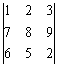

三階矩陣行列式
SRP-285II程式 (共29字):
0ABCX + YX1A + CX2B + AnsXM - X1XB - X2YAns - MCA
SAVE PROG1 或 PROG2
HP 30S 程式 (共30字)
0Y1ABCX + YX1A + CX2B + Y1XY2 - X1XB - X2YY1 - Y2CA
STO EQN
例題: 計算下列的行列式:

SRP-285II 按法:
按 CL 1 = 2nd CL-VAR P/V RCL，再按 ← 選擇正確的PROG，再按 = =
2 = 3 = 7 = 8 = 9 = 6 = 5 = 2 = (顯示行列式的值為12)
HP 30S 按法:
按 VRCL，再按 ← = = 1 = 2 = 3 = 7 = 8 = 9 = 6 = 5 = 2 = (顯示行列式的值為12)